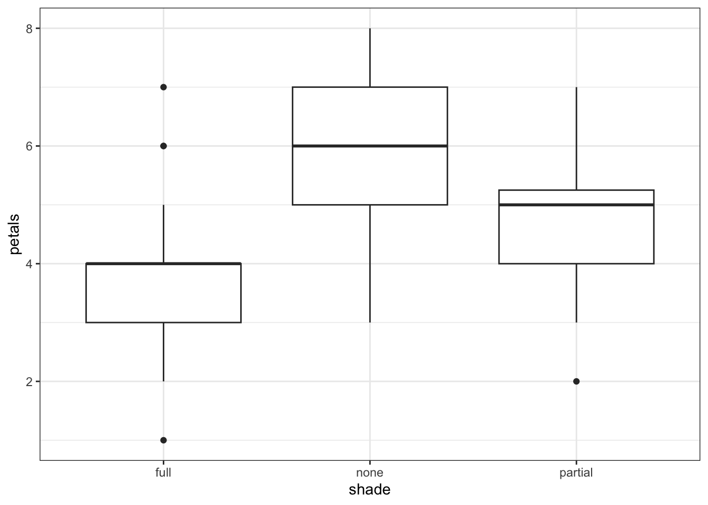
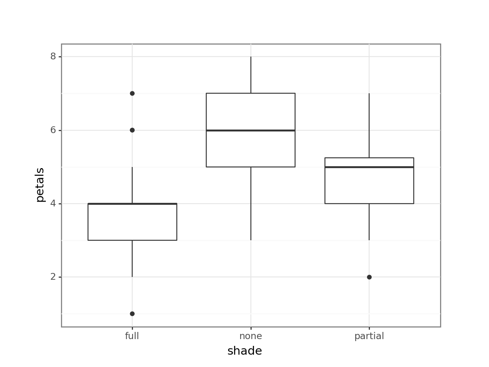
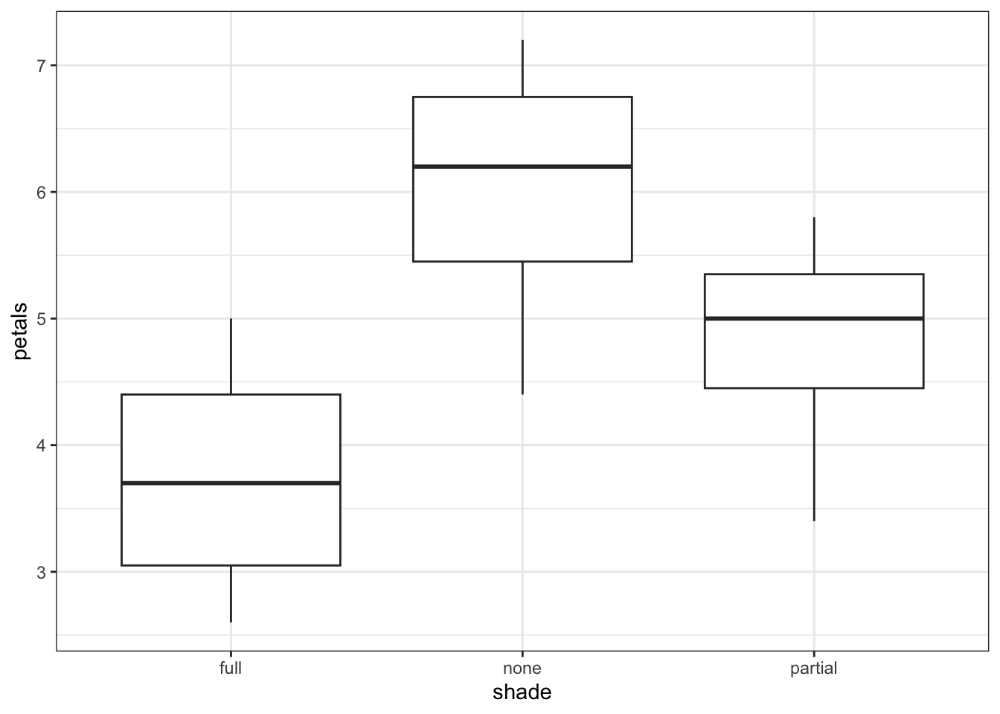
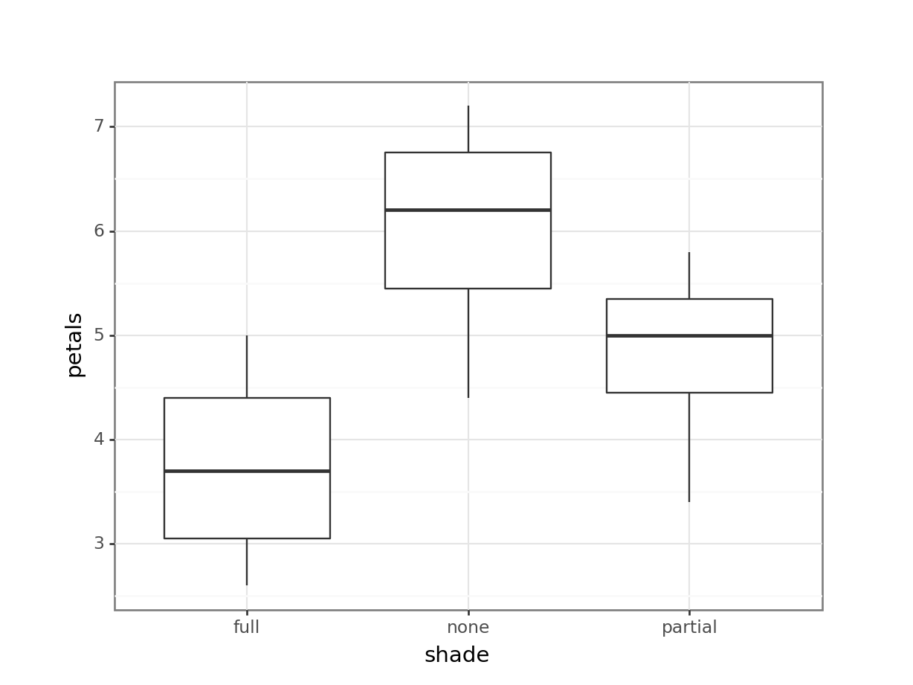
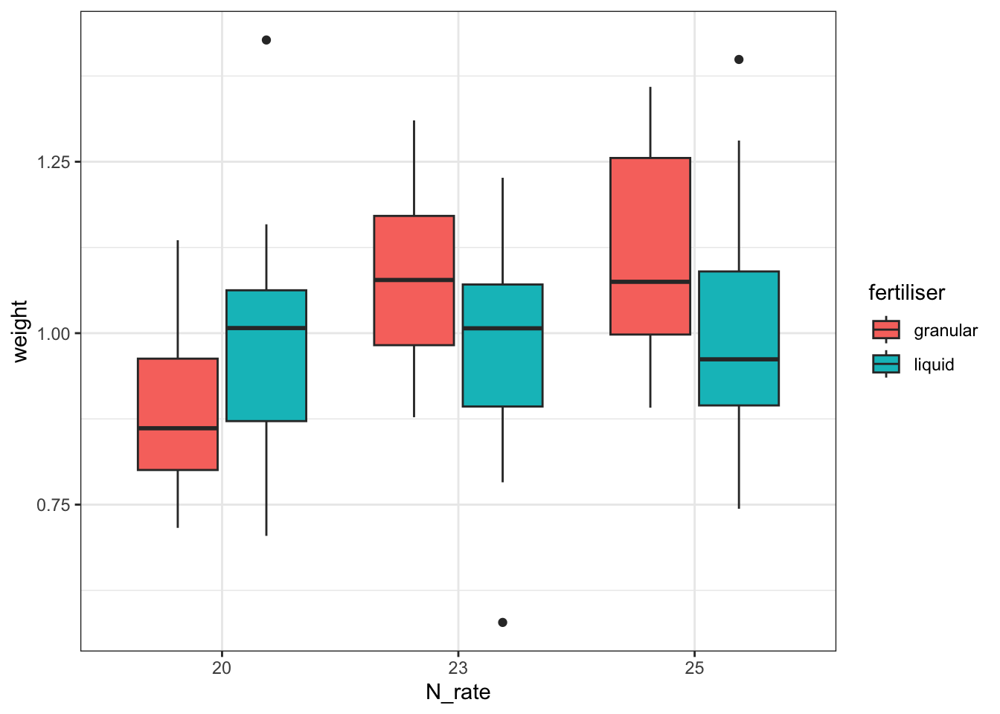
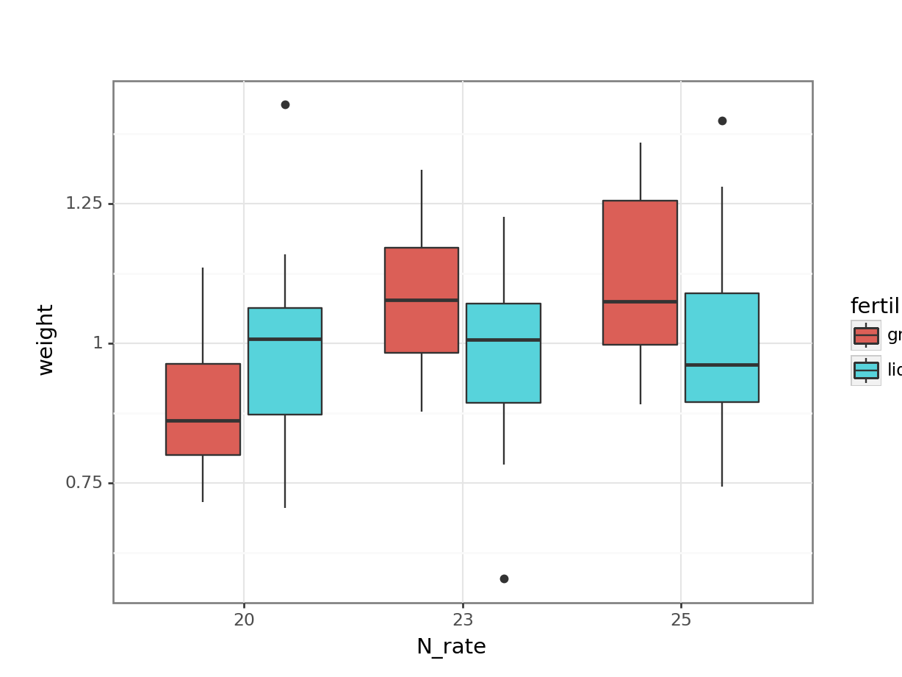
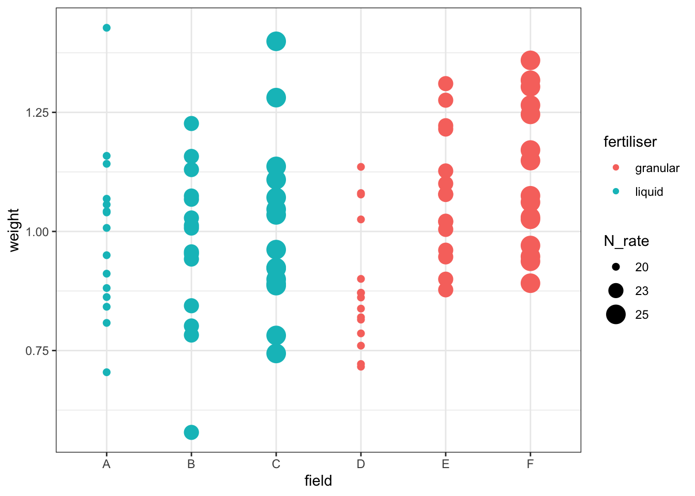
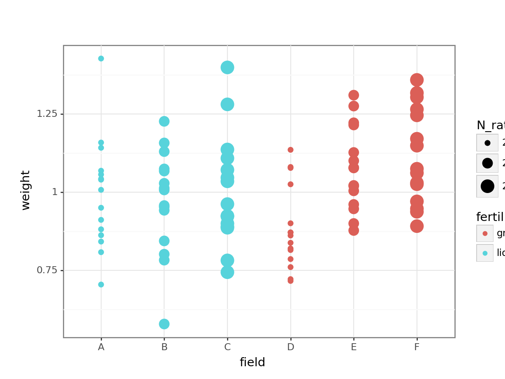

# A collection of R packages designed for data science
library(tidyverse)20 Independence & replication
One of the key assumptions of a linear model is that all the observations or datapoints in your sample are independent of one another. This is an assumption that can be easy to forget about, because isn’t something that we can check with diagnostic plots. Determining whether your data meet this assumption can also be surprisingly complicated - separating a biological replicate from a technical replicate, and figuring out the correct value of n, can take a bit of thought.
There are a couple of example datasets here that you can work through, which will hopefully get you thinking about independence and natural clusters or groupings within datasets. Later in the course, we’ll talk about an extension to the linear model that can be useful for dealing with this sort of structure, since it’s very common in the biological sciences!
20.1 Libraries and functions
Click to expand
20.1.1 Libraries
20.1.2 Libraries
# A Python data analysis and manipulation tool
import pandas as pd
# Simple yet exhaustive stats functions.
import pingouin as pg
# Python equivalent of `ggplot2`
from plotnine import *
# Statistical models, conducting tests and statistical data exploration
import statsmodels.api as sm
# Convenience interface for specifying models using formula strings and DataFrames
import statsmodels.formula.api as smf20.2 Exercise 1 - Flower petals
This dataset contains three variables: shade, which refers to the degree of shading that the plant received while growing; petals, the number of petals recorded on an individual flower of that plant; and plant, the numerical ID assigned to the plant.
flowers <- read_csv("data/flowers.csv")# load the data
flowers_py = pd.read_csv("data/flowers.csv")
# and have a look
flowers_py.head() shade petals plant
0 none 3 1
1 none 3 1
2 none 6 1
3 none 6 1
4 none 4 1Having read in the dataset, we can start by doing some visualisation and analysis. Let’s have a look at how the petal number differs across the shade conditions, and then run a one-way ANOVA to compare the groups statistically.
# construct a boxplot, grouped by shade
flowers %>%
ggplot(aes(x = shade, y = petals)) +
geom_boxplot()
Next, we run a one-way ANOVA:
# create a linear model and run an ANOVA
lm_flowers <- lm(petals ~ shade, data = flowers)
anova(lm_flowers)Analysis of Variance Table
Response: petals
Df Sum Sq Mean Sq F value Pr(>F)
shade 2 50.70 25.3500 13.51 1.575e-05 ***
Residuals 57 106.95 1.8763
---
Signif. codes: 0 '***' 0.001 '**' 0.01 '*' 0.05 '.' 0.1 ' ' 1# visualise using a boxplot
(ggplot(flowers_py,
aes(x = "shade",
y = "petals")) +
geom_boxplot())
Next, we run a one-way ANOVA:
# construct a one-way ANOVA
pg.anova(dv = "petals",
between = "shade",
data = flowers_py,
detailed = True).round(5) Source SS DF MS F p-unc np2
0 shade 50.70 2 25.35000 13.51052 0.00002 0.3216
1 Within 106.95 57 1.87632 NaN NaN NaNThe plot and one-way ANOVA are both pretty convincing. It looks as if there are most petals on flowers in full sun, and the least petals on flowers in full shade, with partial shade somewhere in the middle.
However, you may have noticed something about this dataset - namely, that multiple measurements of the petals variable have been made per plant. Or, to put it another way, though we have biological replicates by having measured from 12 different plants, our petals measurements appear to be technical replicates.
This dataset is a prime example of pseudoreplication.
Let’s adapt this dataset, by finding the mean petal count per plant.
mean_flowers <- flowers %>%
group_by(plant, shade) %>%
summarise(petals = mean(petals))
mean_flowers# A tibble: 12 × 3
# Groups: plant [12]
plant shade petals
<dbl> <chr> <dbl>
1 1 none 4.4
2 2 none 7.2
3 3 none 6.6
4 4 none 5.8
5 5 partial 5.8
6 6 partial 5.2
7 7 partial 3.4
8 8 partial 4.8
9 9 full 5
10 10 full 4.2
11 11 full 3.2
12 12 full 2.6mean_flowers_py = flowers_py.groupby(['plant', 'shade']).mean().reset_index()
mean_flowers_py plant shade petals
0 1 none 4.4
1 2 none 7.2
2 3 none 6.6
3 4 none 5.8
4 5 partial 5.8
5 6 partial 5.2
6 7 partial 3.4
7 8 partial 4.8
8 9 full 5.0
9 10 full 4.2
10 11 full 3.2
11 12 full 2.6Now, we have a much clearer n = 12. What happens if we re-run our analyses, with these mean values?
# construct a new boxplot
mean_flowers %>%
ggplot(aes(x = shade, y = petals)) +
geom_boxplot()
Run a new ANOVA:
# ANOVA on the mean petal counts per plant
lm_mean <- lm(petals ~ shade, data = mean_flowers)
anova(lm_mean)Analysis of Variance Table
Response: petals
Df Sum Sq Mean Sq F value Pr(>F)
shade 2 10.14 5.0700 4.1824 0.05195 .
Residuals 9 10.91 1.2122
---
Signif. codes: 0 '***' 0.001 '**' 0.01 '*' 0.05 '.' 0.1 ' ' 1# visualise using a boxplot
(ggplot(mean_flowers_py,
aes(x = "shade",
y = "petals")) +
geom_boxplot())
Next, we run a one-way ANOVA:
# construct a one-way ANOVA
pg.anova(dv = "petals",
between = "shade",
data = mean_flowers_py,
detailed = True).round(3) Source SS DF MS F p-unc np2
0 shade 10.14 2 5.070 4.182 0.052 0.482
1 Within 10.91 9 1.212 NaN NaN NaNIf anything, the resulting boxplot looks more convincing than it did before. However, we don’t get the same picture with the ANOVA. The p-value is far larger than before, to the point where this analysis is no longer significant. The reason for this is simple - previously, we ran an analysis with a false n = 60, which gave enough power to detect an effect. However, using the true n = 12, we discover that all that statistical power was an illusion or artefact, and with just 12 plants, we can see only the beginning of a trend.
20.3 Exercise 2 - Cabbages
Each row in the cabbages dataset refers to an individual cabbage, harvested by a farmer who has been trying to find the optimum levels of fertiliser in his six fields. There are four variables: response variable weight, the weight of individual cabbages; N_rate, the rate of nitrogen fertiliser applied to the field in kilograms per metre; fertiliser, a categorical variable describing whether the fertiliser was liquid or granular; and field, the ID of the field that the cabbage was harvested from.
Start by reading in the dataset. It’s also important that we tell R to treat the N_rate variable as an ordinal variable, or factor, rather than as a continuous numerical variable.
cabbages <- read_csv("data/cabbages.csv")
# convert the N_rate column to factor
cabbages <- cabbages %>%
mutate(N_rate = as.factor(N_rate))# load the data
cabbages_py = pd.read_csv("data/cabbages.csv")
# convert the N_rate column to factor
cabbages_py['N_rate'] = cabbages_py['N_rate'].astype('category')The farmer is interested in knowing whether nitrogen rate and fertiliser type affects the weight of harvested cabbages in his fields.
On the face of it, you may therefore start by fitting a linear model with these two variables as predictors (since they’re both categorical, that’s a two-way ANOVA):
lm_cabbage <- lm(weight ~ N_rate * fertiliser, data = cabbages)
anova(lm_cabbage)Analysis of Variance Table
Response: weight
Df Sum Sq Mean Sq F value Pr(>F)
N_rate 2 0.23306 0.116531 4.6861 0.01176 *
fertiliser 1 0.02891 0.028910 1.1626 0.28402
N_rate:fertiliser 2 0.23343 0.116715 4.6935 0.01169 *
Residuals 84 2.08885 0.024867
---
Signif. codes: 0 '***' 0.001 '**' 0.01 '*' 0.05 '.' 0.1 ' ' 1# create a linear model
model = smf.ols(formula = "weight ~ N_rate * fertiliser",
data = cabbages_py)
# and get the fitted parameters of the model
lm_cabbages_py = model.fit()
# look at the model output
sm.stats.anova_lm(lm_cabbages_py) df sum_sq mean_sq F PR(>F)
N_rate 2.0 0.233062 0.116531 4.686123 0.011765
fertiliser 1.0 0.028910 0.028910 1.162576 0.284018
N_rate:fertiliser 2.0 0.233429 0.116715 4.693507 0.011687
Residual 84.0 2.088850 0.024867 NaN NaNThis indicates that there is a significant interaction between N_rate and fertiliser. To help us visualise the direction of that effect, we can plot the data as follows:
cabbages %>%
ggplot(aes(x = N_rate, y = weight, fill = fertiliser)) +
geom_boxplot()
# visualise using a boxplot
(ggplot(cabbages_py,
aes(x = "N_rate",
y = "weight",
fill = "fertiliser")) +
geom_boxplot())
Together with the ANOVA table, you might be able to make some recommendations to the farmer about the optimum fertiliser programme for his cabbages.
But - is this a sensible approach? Do we trust the conclusions?
To help you answer that question, let’s visualise the effect of the field variable, and its relationship to other variables, with a plot:
cabbages %>%
ggplot(aes(x = field, y = weight,
colour = fertiliser, size = N_rate)) +
geom_point()Warning: Using size for a discrete variable is not advised.
# visualise using a boxplot
(ggplot(cabbages_py,
aes(x = "field", y = "weight",
colour = "fertiliser",
size = "N_rate")) +
geom_point())
This is rudimentary, but it hopefully helps to illustrate one of two problems with the approach taken here: our different treatments/conditions in the fertiliser and N_rate variables have been applied, wholesale, to entire fields. Which makes sense, practically speaking - it’s hard to see how you would do any differently - but it does mean that there are issues with treating individual cabbages as independent observations, rather than technical replicates.
Have a think about how you could actually investigate this question, using the dataset presented here. What is our actual value of n? (Or put another way: which are our biological replicates?) What kind of model might you fit instead of the linear model fitted above?
20.4 Criteria for true independent replication
Confusing our biological and technical replicates leads to pseudoreplication, as discussed above. So, how do we make sure that we truly do have biological replicates?
For a replicate to qualify as a biological, rather than technical replicate, it needs to meet three criteria for independence. These are:
1) Independent randomisation to different treatment conditions
There should be no systematic bias in how biological replicates are allocated to conditions. This means that allocations can’t be made on the basis of sample characteristics. In the first example above, the flowers weren’t randomly assigned to different shade conditions - they were assigned on the basis of which plant they were growing on, meaning that they weren’t independent of one another.
2) The experimental intervention must be applied independently
This is to ensure that any technical error is random. In the second example above, if the farmer incorrectly measures the nitrogren he’s adding to one of his fields, this will affect more than just a single cabbage - it will likely affect a whole group of them, if not the entire field.
3) Data points/biological replicates must not influence each other
Whether they are from the same or different conditions, biological replicates shouldn’t have an affect on one another (at least not before you’ve collected the data you need!). This may involve human participants conferring about the study, or in an experiment that involves cell culture, may involve organisms competing with one another for resources and affecting the rate of growth.
20.5 Summary
Key points
- Biological replicates increase n, while technical replicates do not
- The value of n can have a meaningful impact on the results of significance tests
- Pseudoreplication in a sample can lead to a researcher drawing the wrong conclusions